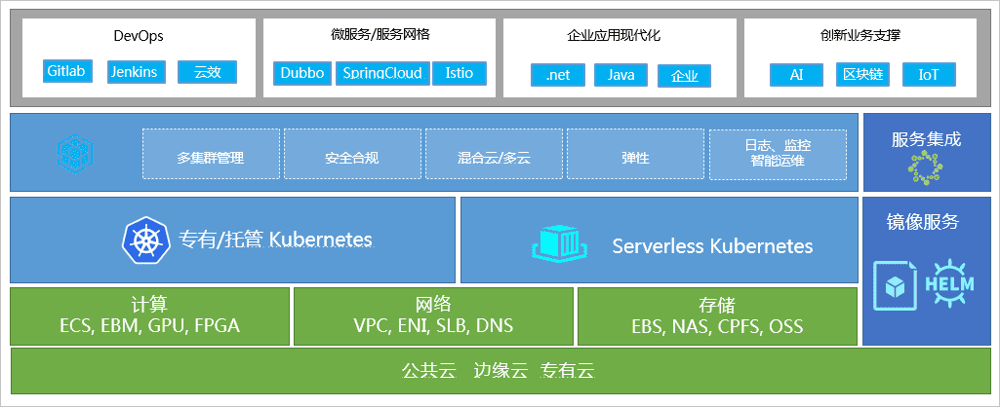
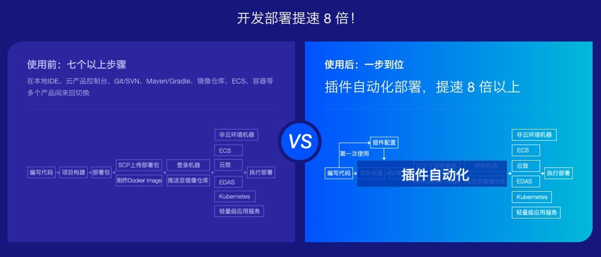
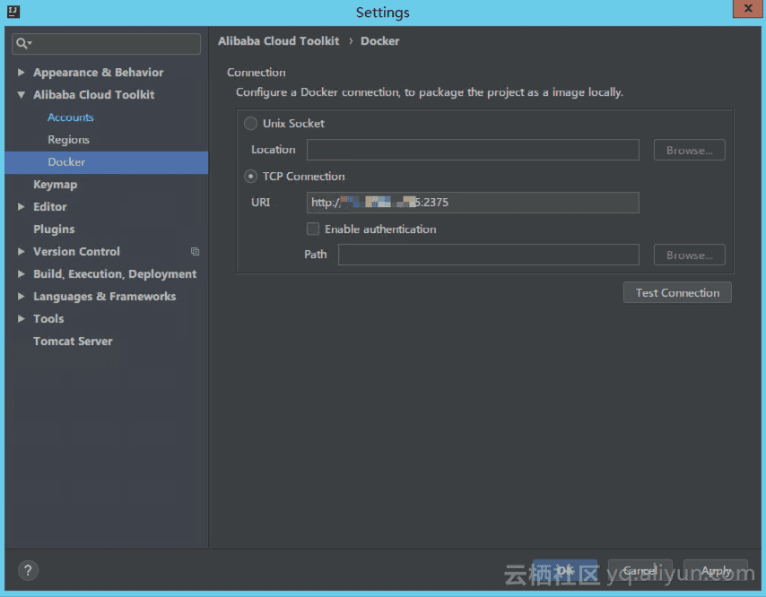
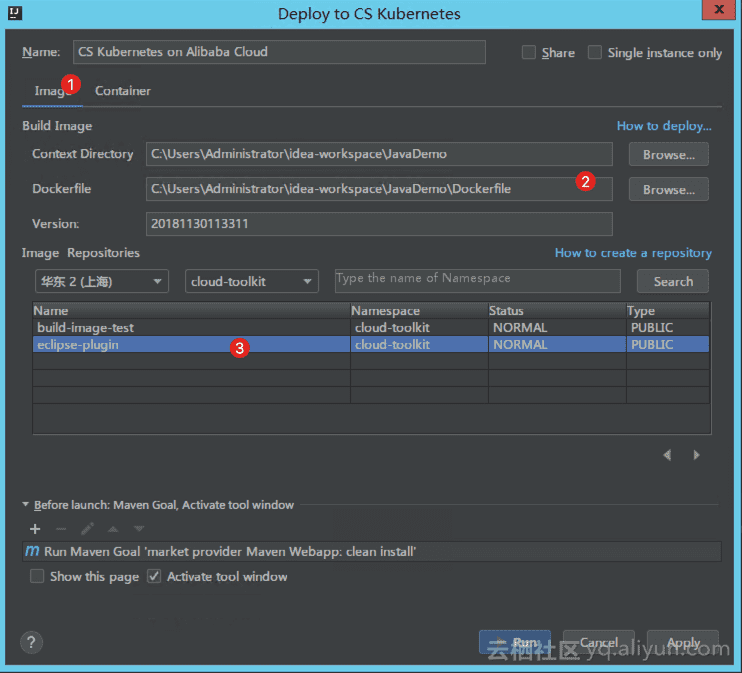
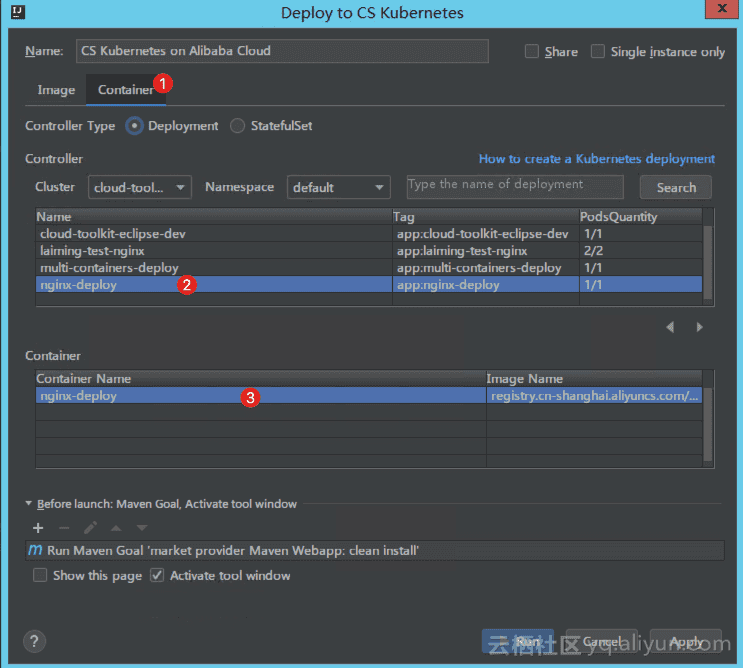
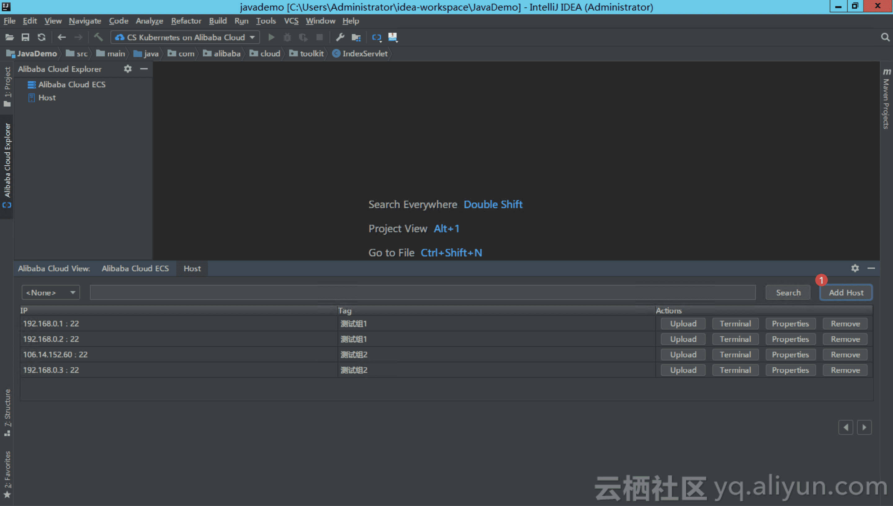
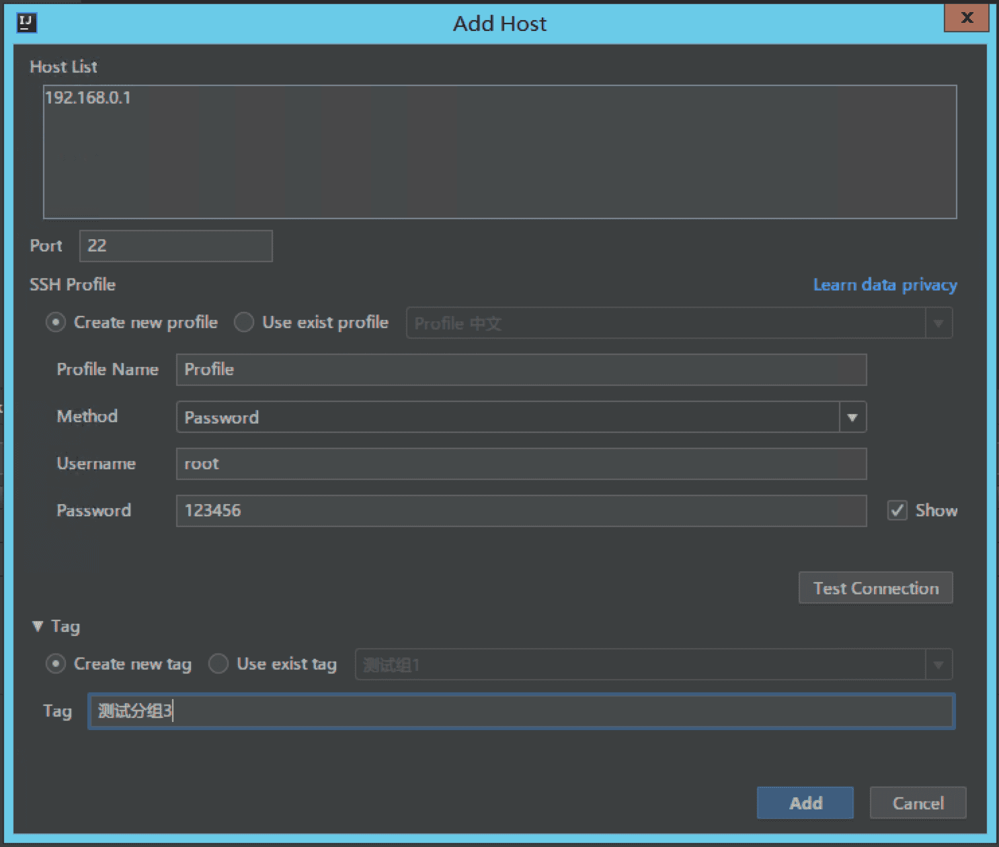
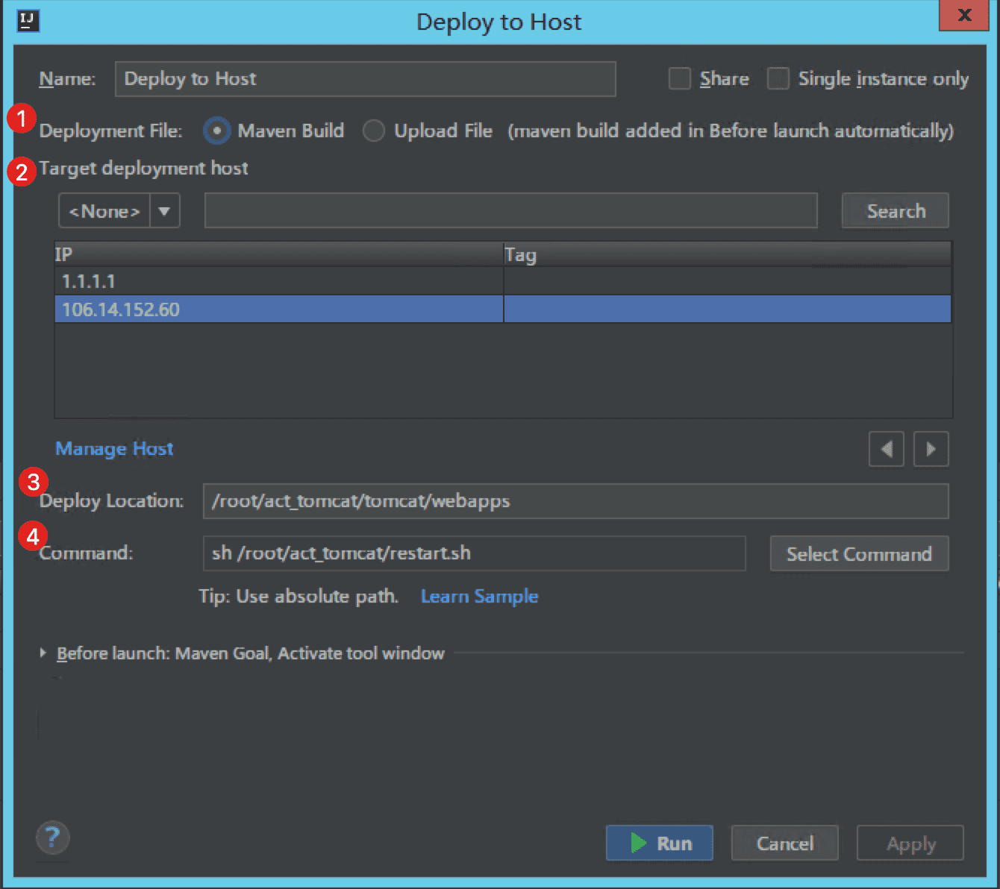

原文连接:https://www.cnblogs.com/didispace/p/11755822.html
随着互联网时代的不断发展，开发者可能会面临这样的困境：为了解决问题、提升开发效率而竭力研发出来的“创新”，似乎削弱了他们在公司的重要程度，甚至取代了他们原先的地位。比如，在云原生时代，部分企业更愿意选择 K8s 来解决运维、弹性的问题，而不是组建一支需要耗费大量雇佣资金、管理资金的研发团队。
对于 K8s，它的价值在于不仅能帮助公司降低运维成本，同时还可以带来弹性、敏捷、可移植能力，但是对于开发者而言，我们的价值不应该仅仅停留在能与 K8s 解决同样的问题，而是从困境跳脱出来，思考如何更灵活、更高效地运用 K8s 这些 “能为你所用” 的东西，来提升自己的综合技能。
涉及开发的技术人员，永远绕不开的就是将应用部署到相应服务器上，今天给大家讲解，对于容器服务 K8s，怎么实现真正“一键部署“，提高开发部署效率，在 K8s 的运用上做到快人一步。以下是本文提纲：
- 什么是容器服务 K8s
- 如何实现”一键部署“到容器服务 K8s
- 如何实现”一键部署“到 host，开发部署提速 8 倍
一、 什么是容器服务 K8s

容器服务 K8s 是基于原生 K8s 进行适配和增强，简化集群的搭建和扩容等工作，提供高性能可伸缩的容器应用管理能力，支持企业级容器化应用的全生命周期管理，整合阿里云虚拟化、存储、网络和安全能力，打造云端最佳容器化应用运行环境。其中的核心功能为：
- 集群管理：灵活的地域和网络环境选择，可以根据自己的需求，选择不同的地域创建和删除集群。
- 多种服务器托管方式：支持授权容器服务创建云服务器加入到指定集群，支持将已购买的云服务器添加到指定集群。
- 一站式容器生命周期管理：包括网络、存储、日志、监控、调度、路由、权限。
- 灵活扩展调度策略，轻松打通上下游交付流程：支持服务级别的亲和性策略和横向扩展、跨 AZ 高可用和灾难恢复、集群和应用管理的 OpenAPI，轻松对接持续集成和私有部署系统。
二、如何实现”一键部署“到容器服务 K8s
提高开发部署的效率有很多种方法，今天给大家分享的是一款本地 IDE 插件——Cloud Toolkit，据说是开发者用得最多的插件之一，不仅能够将代码开发到最终部署这整个流程自动化，更是可以部署到任意服务器 & 云端（ECS、EDAS、K8s 和小程序云等），而且附带很多功能：Arthas 诊断、Dubbo工具、Terminal 终端、文件上传和 MySQL 执行器等，最重要的一点是：免费！免费！免费！网上很多博客、技术网站、公众号都有相关的测评，大家可以参考看看，或者自己安装试用，一定要试用【一键部署】的功能！下面介绍，如何借助这个插件，将应用一键部署到容器服务 k8s 上。

（一）安装插件
免费插件链接：https://www.aliyun.com/product/cloudtoolkit
（二）配置插件首选项
点击：顶部菜单Tools --> Alibaba Cloud Toolkit --> Preferences-->左边列表的 Alibaba Cloud Toolkit--> Accounts ，出现如下界面，配置阿里云账号的 AK 和 SK，即可完成首选项配置。（如果是子账号，则填写子账号的 AK 和 SK）

（三）设置本地 Docker 镜像打包
点击：顶部菜单Tools --> Alibaba Cloud Toolkit --> Preferences --> 左边列表的 Alibaba Cloud Toolkit --> Docker，如下图，设置本地 Docker 镜像打包。

（三）部署应用
在 Intellij IDEA 中，鼠标右键项目工程名，在出现的菜单中点击 Alibaba Cloud --> Deploy to CS Kubernetes...，出现如下部署窗口：
第一步：设置 Image

- 在 Image 标签页中，选择本地应用程序的 Context Directory 和 Dockerfile (通常会根据您本地的应用工程自动识别并设置)。
- 选择容器镜像服务的地域、命名空间和镜像仓库，然后单击 Container 标签页。
（说明：如果您还没有镜像仓库，在对话框右上角单击 Create a new repository 跳转到容器镜像仓库创建镜像仓库，创建步骤请参考容器镜像仓库文档。）
第二步：设置 Container

- 在 Container 标签页，选择容器服务 Kubernetes 的 Deployment（部署）、Clusters（集群）和Namespace（命名空间） 。
- 选择指定的 Container（容器）。
（说明：如果您还没有创建容器服务 Kubernetes 的 Deployment，在对话框右上角单击 Create a new Kubernetes deployment，跳转到容器服务 Kubernetes 控制台创建 Deployment，创建步骤请参考容器服务 Kubernetes 版文档。）
第三步：执行部署
点击 Run 按钮之后，即可完成本地应用程序向容器服务 Kubernetes 的部署。
三、如何实现”一键部署“到 host，开发部署提速 8 倍
这款插件可以将应用部署到 6 种服务器上，分别是：
- Host （任意服务器）
- ECS
- CS K8s
- EDAS（包括 EDAS for ECS Application & EDAS for K8s Application）
- Mini Program （小程序云）
- SAE
下面为大家详细解说，如何将应用一键部署到 host。
第一步：添加服务器
- 点击：顶部菜单 Tools --> Alibaba Cloud --> Alibaba Cloud View --> Host ，打开机器视图界面，如下图：

- 点击：右上角 Add Host 按钮，出现添加机器界面，如下图，设置相关配置。

第二步：执行部署
在 IntelliJ IDEA 中，鼠标右键项目工程名，在出现的菜单中点击 Alibaba Cloud --> Deploy to Host...，会出现如下部署窗口，设置部署参数，然后单击 Deploy，即可执行初次部署。

部署参数说明：
- Deploy File：部署文件包含两种方式：
- Maven Build：如果当前工程采用 Maven 构建，可以使用 Cloud Toolkit 直接构建并部署。
- Upload File：如果当前工程并非采用 Maven 构建，或者本地已经存在打包好的部署文件，可以选择并直接上传本地的部署文件。
- Target Deploy host：在下拉列表中选择 Tag，然后选择要部署的服务器。
- Deploy Location ：输入在 ECS 上部署路径，如 /root/tomcat/webapps。
- Commond：输入应用启动命令，如 sh /root/restart.sh。表示在完成应用包的部署后，需要执行的命令 —— 对于 Java 程序而言，通常是一句 Tomcat 的启动命令。
最后，希望今天推荐的插件能够真正帮助大家提高开发部署的效率，提高对工具运用的能力，大家可安装试用起来，有任何疑问都可以加入社群进行提问，听说他们的客服也是一流，而且不定期有各种有奖活动/排位赛，最近就有 2 个中奖率较高的活动，点击本链接在文末查看具体的活动详情。
欢迎关注我的公众号：程序猿DD，获得独家整理的学习资源和日常干货推送。
如果您对我的专题内容感兴趣，也可以关注我的博客：didispace.com